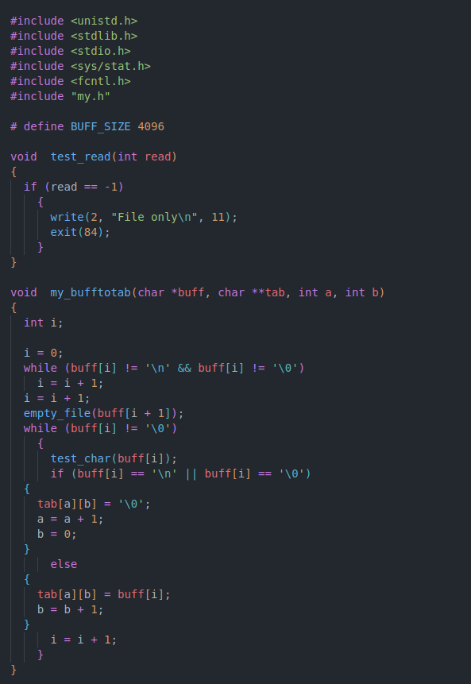
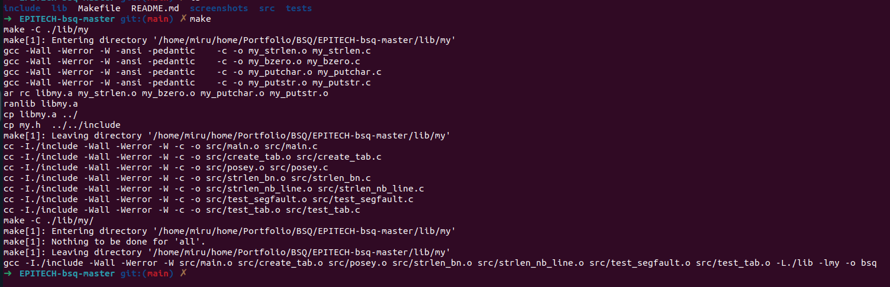
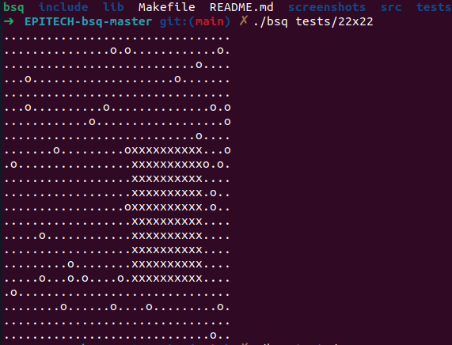

Introduction au Langage C
Le langage C est un langage de programmation de bas niveau connu pour sa performance et sa proximité avec le système. Il est largement utilisé pour développer des systèmes d'exploitation, des langages de programmation et des applications performantes. Sa syntaxe influence de nombreux autres langages, et il continue d'être un choix populaire pour la programmation système.
Extrait de Code en C
Voici un extrait de code tiré du projet BSQ. Le projet BSQ (Biggest Squared Area) implique de trouver la plus grande sous-matrice carrée sans obstacles dans une matrice donnée, une compétence fondamentale en algorithmique.
Compilation en C
Un compilateur est un programme informatique qui traduit le code écrit dans un langage de programmation (comme le C) en un langage machine ou en un code intermédiaire. La compilation est le processus clé qui transforme le code source en un programme exécutable.
Test du Code
Tester le code est une étape essentielle pour s'assurer que l'application fonctionne comme prévu. Cela implique généralement l'exécution du programme avec divers ensembles de données pour vérifier la logique et la performance du code.
